High-Level Detail
Features, pipelines, knowledge tree, version history, and performance plots for the Persian RAG Knowledgebase.
Features
- Multi-format ingest — .xlsx (openpyxl/calamine), .docx, .pdf (PyMuPDF) via a parser registry; orchestrated full/incremental rebuilds with quality gates and versioning.
- Semantic chunking — semantic / fixed strategies; QA-pair, article, kv-pair, reason-detail, single-col-list and staff-profile schemas with parent chunks, question dedup, and overlap control.
- Hybrid retrieval — Rust tantivy BM25 (RAM, 50 MB heap, whitespace tokenizer over Persian word+3-gram stream) + dense MiniLM-L12 cosine index (numpy .npz cache + pgvector HNSW, both RAM-pinned) → RRF fusion k=60 → cross-encoder rerank, with Redis + in-memory result cache (TTL 600 s, 2–7 ms hits).
- RAM-first — Postgres vectors + HNSW fully in shared_buffers (16 GB) + effective_cache_size (800 GB) + pg_prewarm; tantivy in RAMDirectory; dense + reranker on H200 GPU.
- Persian query path — normalization, synonym/beam expansion (93-entry colloquial→formal map), reform/enhance stages, optional HyDE (off by default).
- Operations UI — dashboard, transparency views (RTL Persian), 5-step ingestion wizard, benchmarks, chunk/document browsers, zip browser, monitoring (12 routers).
- Stage-level evaluation — every gold row classified A / A′ / B / D with per-stage top-k lists dumped to JSONL.
Ingest pipeline — high-level black box
Pipeline: kb_manager/pipeline/orchestrator.py coordinates scan → parse → preprocess → chunk → embed → store → quality gate → version, with full/incremental rebuilds and versioning (pipeline/versioning.py). EntityList supplementary sheets (ضمیمه پایگاه دانش list sheets) are stored separately and injected at search step 8, not embedded as chunks.
Retrieval pipeline — high-level black box
Flow: POST /search/api (kb_manager/web/routes/search.py). Query is normalized and tokenized (word tokens + Persian char 3-grams, stopword removal), expanded via synonym/multi-query beam (default 5), optional HyDE off. Two BM25 legs (content + keywords, keyword_boost×3) run on tantivy RAM index or Python fallback; dense leg uses the MiniLM-L12 384-d matrix from data/dense_embeddings.npz (or pgvector HNSW when KB_DB_MODE=pgvector). Results fuse via RRF k=60, cross-encoder rerank (BAAI/bge-reranker-v2-m3, GPU), then RRF↔cross-encoder score fusion α=0.7 with pin protection (BM25/merged top-3 cannot drop below rank 10), then final top-k gated by min_relevance_threshold. Step 8 injects EntityList rows whose description_embedding cosine ≥ 0.6. Redis (KB_REDIS_URL, TTL 600 s) + in-memory fallback cache keyed by sha256(normalized_query|top_k|boost|filter_path); errors never cached.
Query Classification & Ambiguity Resolution (v13.1)
The pipeline includes a 3-way LLM classifier (nodes/classify.py) that routes every query into one of three categories before retrieval, plus an Mizan System-1 + Gemma hybrid ambiguity resolver (mizan.py) for subspace routing.
- Classification categories: greeting (سلام، تشکر، خداحافظی — no KB lookup); specification (user names a subspace چک، تسهیلات، شرکت، عمومی — locks subspace); question (real query needing retrieval — passes to ambiguity resolver).
- Ambiguity resolver (Mizan System-1 + Gemma hybrid): Mizan System-1 (
mizan.py:234-280) — calibrated subspace routing with choice probabilities + ambiguous flag; Gemma LLM (infer_specification.py) — scattered detection + clarifying question generation; Fallback — heuristic keyword-based subspace detection when LLMs unavailable. - Second resolver view (SVM-RBF + Mizan): 3-way Classifier → SVM-RBF 7-dim features (ambiguous gate) → Mizan System-1 /v1/systemone (subspace routing + ambiguous flag) → Gemma LLM scattered detection → clarifying question → retrieve with subspace.
Knowledge tree — folder hierarchy (v13_1405-07-06 → 18 docs / 1,123 chunks)
- Source ZIP hierarchy →
Document.doc_metadata.folder_hierarchy: list[str]→ per-chunkcd[7]atsearch.py:438. Leafallowed_idspowersPOST /search/apifilter_path. - Chunk types in this KB: qa_pair 776 · reason_detail 198 · body 71 · article 46 · kv_pair 19 (+ 13 parent chunks).
- Leaf-level filtering: KB tester
filter_path: "شاخه/چک"yields only that subtree (allowed_ids={chunk_id | filter_path in "/".join(hierarchy)}).
Supplements — 5 EntityList (ضمیمه, NOT chunks)
EntityList supplementary tables (database.py:249) are stored on-disk as XLSX list sheets and are not Chunks. At search time (step 8) they are injected via MiniLM-L12 cosine similarity vs description_embedding (threshold 0.6), producing SearchSteps.injected_entities [{list_name, description, content: content_json, similarity}] returned by POST /search/api. Lists: استفاده کنندگان گزارش، تامینکنندگان دیتا، سهامداران، لیست و عناوین وام ها، Word Document.
Web service architecture
Routers mounted in kb_manager/web/app.py: /documents, /chunks, /pipeline, /versions, /monitoring, /search, /benchmarks, /cleanup, /transparency (+ zip browser), /ingestion (+ KB history) — plus /health, /api/health, /ready and / dashboard. The UI ships Persian RTL views (Vazirmatn). Lifespan pre-warm builds the tantivy RAM index + MiniLM embeddings + cross-encoder on GPU (~60 s first boot includes HuggingFace cache load) so the first query is fast.
Version history (changelog)
| Ver | Corpus | Pipeline / retrieval | Benchmark (measured) |
|---|---|---|---|
| v1 | ~160 files (31Tir1405) | baseline ingest + BM25 | — |
| v2 | 355 docs / 6,208 chunks | BM25 + TF-IDF (RRF k=60) | Hit@5 90%, MRR 0.736, 2.8 s |
| v3 | 355 docs / 6,208 chunks | + dense MiniLM-L12 + RRF | Hit@5 89.2%, MRR 0.787, 1.9 s |
| v4 | 355 docs / 6,208 chunks | + char 3-grams + cross-encoder reranker | Hit@5 90%, MRR 0.775, 15.8 s |
| v5 | 355 docs / 6,208 chunks | frozen dataset + BM25×3 | Hit@5 84.2%, MRR 0.751, 4.2 s |
| v6 | 69 docs / 3,626 chunks | P0–P8 remediation, synonym beam5, MinHash dedup | 10-q smoke 100% Hit@5 |
| v7 | 34 docs / 2,074 chunks | fresh 1405-05-31 KB, colloquial expansion, IVA-15 | doc-Hit@5 73.3% (11/15), MRR 0.466 |
| v8 | 103 docs / 6,593 chunks | pgvector HNSW-384 + tunable keyword×3.0 | HNSW 23.1 s → GPU 18.4 s |
| v9 | 21+32 docs / ~1,084 chunks | KB_9.7.2026 type-aware, transparency/zip | IVA 11/15 73.3% MRR 0.474 |
| v10 | 35 docs / 2,282 chunks | 1405-06-23, kv/single-col schemas, stage-level bench | Hit@5 0.9244, MRR 0.8369 |
| v11 ⭐ | 35 docs / 2,227 chunks | chunkfix rebuild + A/A′ diagnostics + dense use_context=False | Hit@5 0.9306, Hit@1 0.7511, MRR 0.8281 |
| v12 | code only (same v11 KB) | typo corrections + exclusive-term beam + Redis cache | SYNONYM_MAP 93 entries |
| v13 | 18 docs / 1,123 chunks | 1405-07-06, RAM-first: tantivy RAM BM25, pgvector 16 GB shared_buffers, GPU dense/rerank H200 | latency 55 ms, Hit@5 pending re-benchmark |
| v13-RAM | code + infra | RAM-first tuning: shared_buffers=16GB, effective_cache_size=800GB, pg_prewarm, KB_FAST_CACHE=true | Latency 55 ms vs 3.1 s before |
v11 manifest: versions/v11_1405-06-23/manifest.json. v10 export: versions/v10_1405-06-23/.
Performance plots
All plots verified present under kb-manager/data/plots/ (copied to docs/plots/).
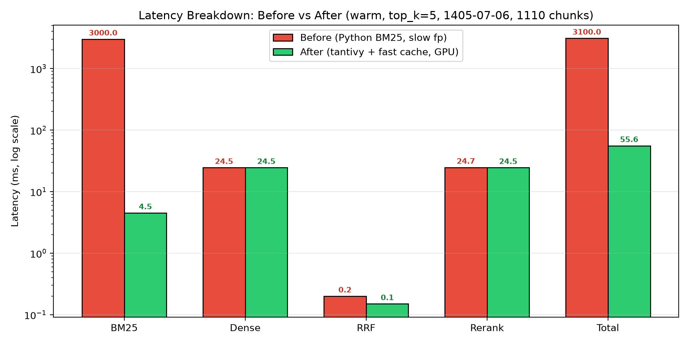


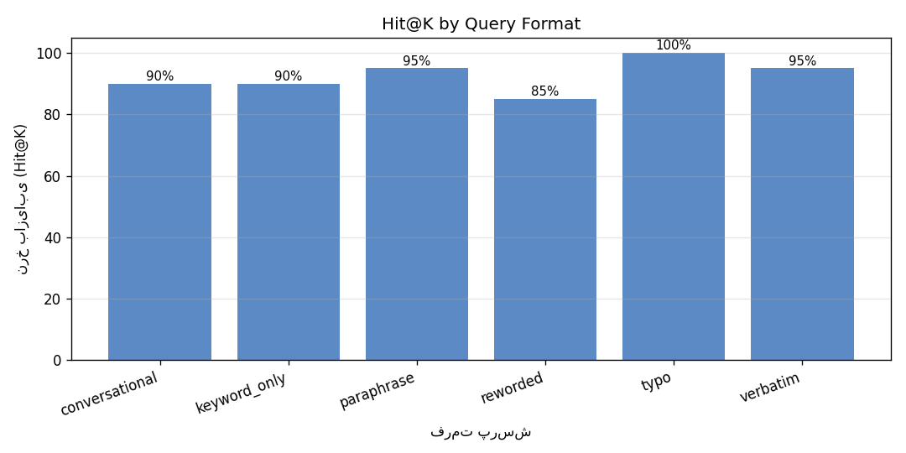
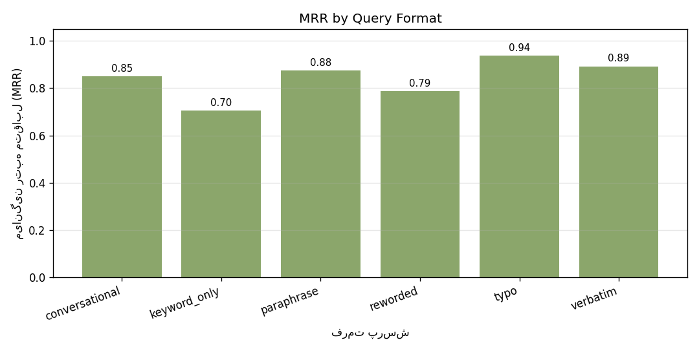
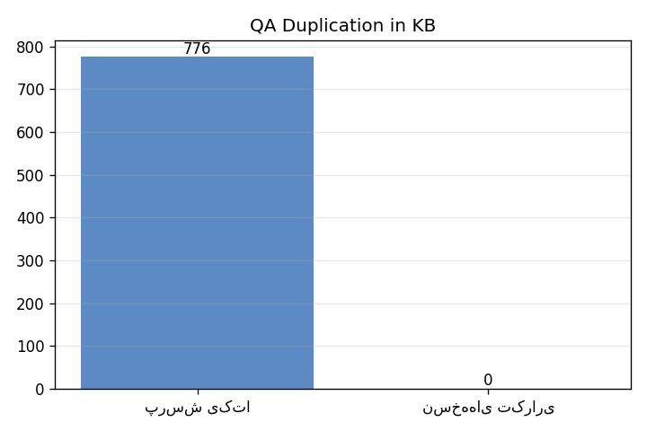
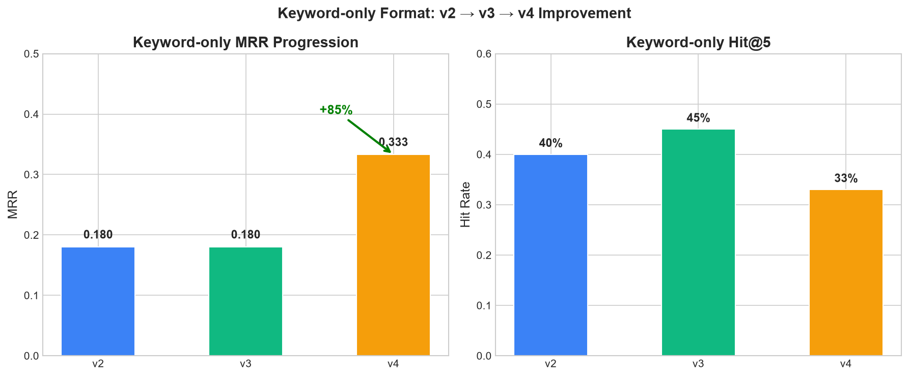
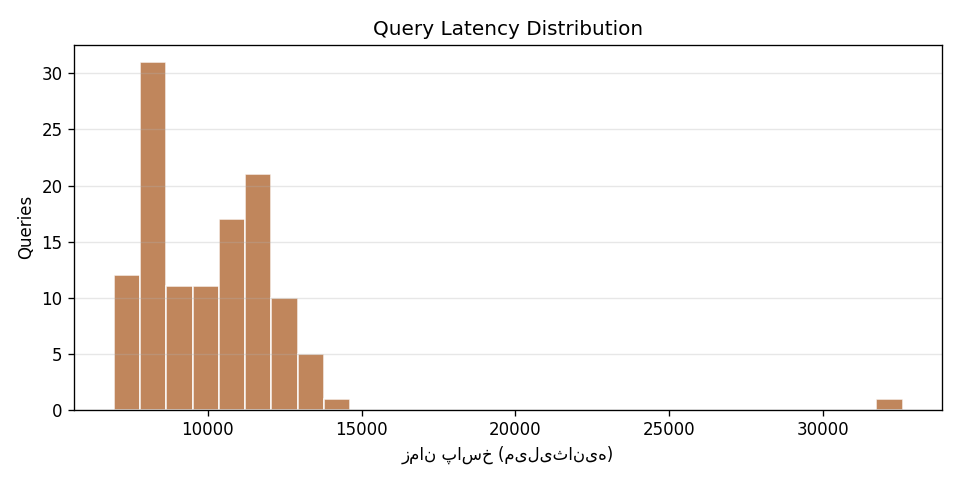
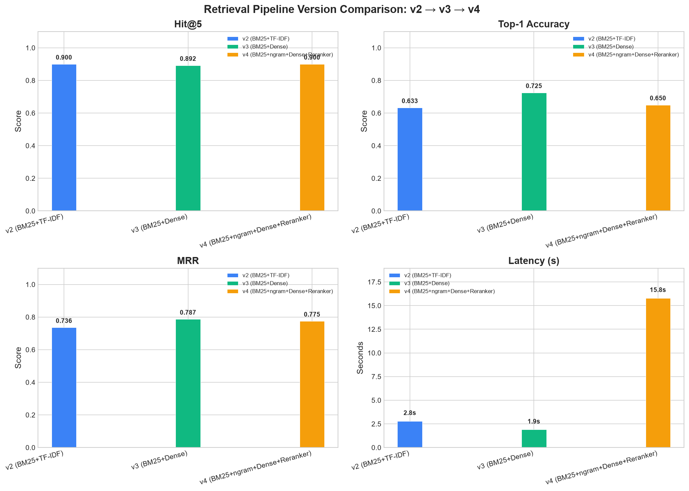
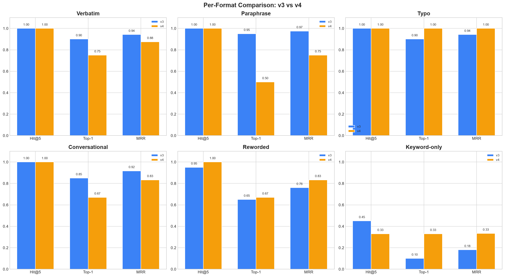
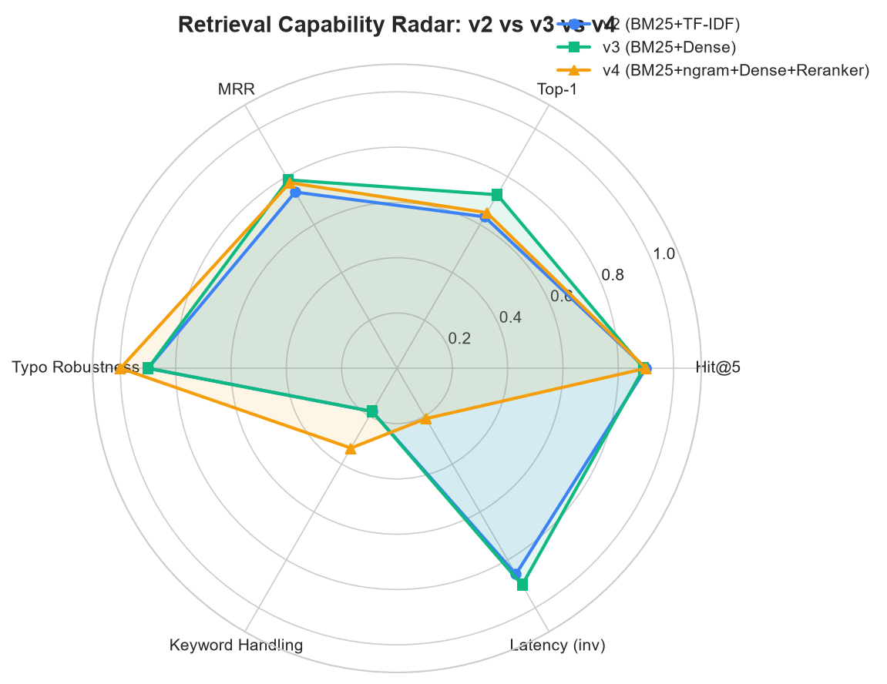
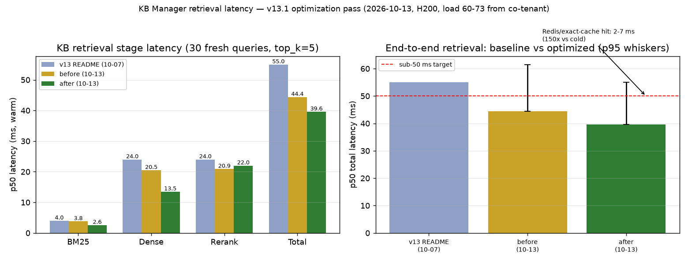
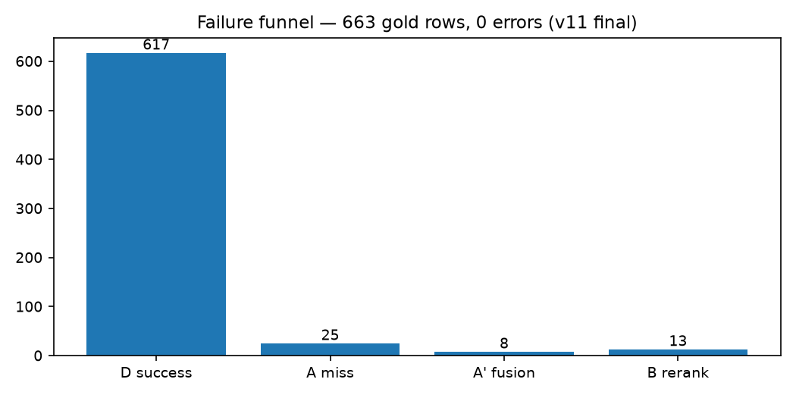
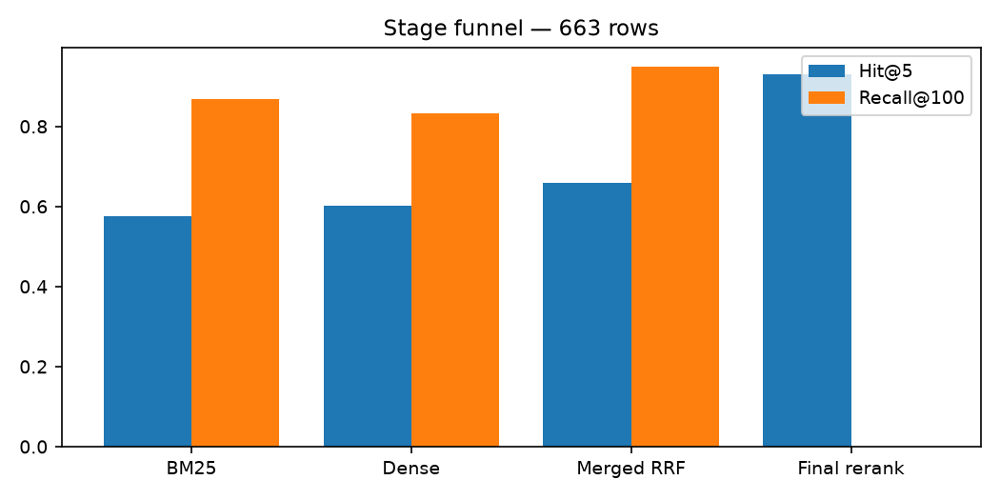

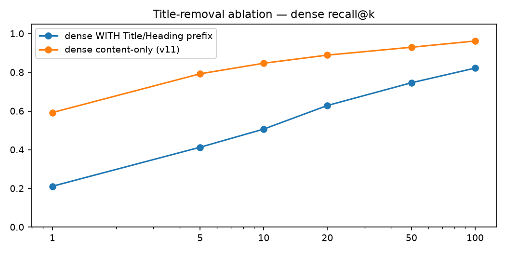

Need parameters, latency breakdowns, API/CLI reference, configuration, database schema, benchmarks, and the ambiguity-resolver/classifier evaluation? Go to In-Depth Technical Detail.